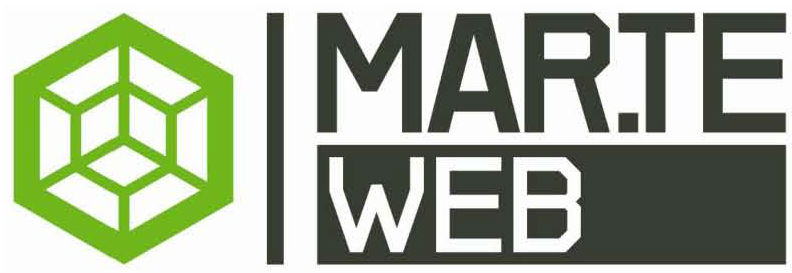
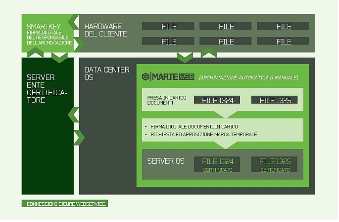

QUALITY AND SAFETY
Mar.teWEBTM
ARCHIVIAZIONE REMOTA.
L’IDEALE PER IL FUTURO.
L’importanza sempre maggiore acquisita dal tema della Archiviazione Sostitutiva è alla base di Mar.teWebTM, un prodotto/sistema assolutamente innovativo che Quality and Safety ha sviluppato per gestire in modo semplice, efficiente e sicuro l’archivio dei documenti informatici.
L’ideale è di effettuare e sistematizzare l’archiviazione legale tramite la rete Internet. I documenti vengono inviati e conservati al sicuro, presso un archivio centralizzato, dove vengono siglati con una Firma Digitale e con una Marca Temporale rilasciate da Enti Certificatori quali Infocert, Actalist e Postecom. I documenti rimangono sempre disponibili per la consultazione ai soggetti abilitati.
Ciò rende vantaggioso Mar.teWebTM specialmente se applicato ad archivi di file relativamente poco corposi, quindi facili e veloci da trasmettere e trattare.
Queste caratteristiche e peculiarità di Mar.teWebTM ne fanno uno strumento particolarmente adatto alle esigenze di molti settori, tra i quali la Pubblica Amministrazione, le Assicurazioni, gli studi legali e notarili e in ogni caso chiunque voglia proteggere e preservare nel tempo i documenti informatici strategici per la continuità della propria operatività aziendale, eliminando l’utilizzo di supporti sostitutivi fisici qali il CD o il DVD, a favore di un modello più evoluto ed efficace: l’archivio sostitutivo On-Line che assicura tutti i benefici di una soluzione SAAS (Software As A Service).
L’ideale è di effettuare e sistematizzare l’archiviazione legale tramite la rete Internet. I documenti vengono inviati e conservati al sicuro, presso un archivio centralizzato, dove vengono siglati con una Firma Digitale e con una Marca Temporale rilasciate da Enti Certificatori quali Infocert, Actalist e Postecom. I documenti rimangono sempre disponibili per la consultazione ai soggetti abilitati.
Ciò rende vantaggioso Mar.teWebTM specialmente se applicato ad archivi di file relativamente poco corposi, quindi facili e veloci da trasmettere e trattare.
Queste caratteristiche e peculiarità di Mar.teWebTM ne fanno uno strumento particolarmente adatto alle esigenze di molti settori, tra i quali la Pubblica Amministrazione, le Assicurazioni, gli studi legali e notarili e in ogni caso chiunque voglia proteggere e preservare nel tempo i documenti informatici strategici per la continuità della propria operatività aziendale, eliminando l’utilizzo di supporti sostitutivi fisici qali il CD o il DVD, a favore di un modello più evoluto ed efficace: l’archivio sostitutivo On-Line che assicura tutti i benefici di una soluzione SAAS (Software As A Service).

SEMPLICE E COMPATIBILE.
SOPRATTUTTO CON LE VOSTRE ESIGENZE.
Tra i principali vantaggi di Mar.teWebTM c’è senz’altro la razionalizzazione della gestione degli archivi, con i benefici che ne derivano sul piano dell’agilità delle procedure che sul piano del risparmio risorse e materiali. La notevole riduzione della quantità di carta utilizzata, per esempio, fa addirittura di Mar.teWebTM un programma all’avanguardia anche in termini di eco-sostenibilità.
Questi, in sintesi, sono i suoi principali punti di forza:
- Certifica e protegge i documenti rendendoli immodificabili e blindati.
- Gestisce un processo legalmente garantito, che realizza ciò che prevede la norma sulla dematerializzazione documentale (Delibera CNIPA 19/02/2004, n. 11/2004 e sue precedenti);
- È versatile e semplice da utilizzare, tramite la componente Web Service;
- È facilmente accessibile e integrabile con qualsiasi Sistema Gestionale già presente presso le attrezzature del Cliente;
- Consente la consultazione a fini legali a seguito dell’archiviazione, qualora fosse necessario;
- Offre la possibilità di certificare e gestire categorie documentali distinte, soprattutto quando i documenti in questione sono molto numerosi e poco ingombranti in termini informatici e si colloca in diversi ambiti, ad esempio, Sanitario, Amministrativo, Assicurativo, Fiscale, Notarile, ecc;
- Permette di delegare la responsabilità e la garanzia del processo di Archiviazione Sostituiva a un soggetto terzo legalmente riconosciuto, quale ad esempio un notaio o avvocato.
MARCA, CERTIFICA, TUTELA
La soluzione ideale per certificare, conservare e consultare in modo legale, grandi volumi di documenti depositandoli, con la comodità dell’accesso via Internet, presso archivi assolutamente sicuri. Niente è più preciso ed affidabile.
LA SICUREZZA DEI DOCUMENTI
LA SICUREZZA DEI DOCUMENTI
ENTRATI IN RETE
UNA CASSAFORTE VIRTUALE CHE ASSICURA VANTAGGI CONCRETI
CERTIFICAZIONE TEMPORALE E GESTIONE ON-LINE LA COMBINAZIONE DECISIVA.
Mar.teWebTM consente di certificare ogni documento archiviato elettronicamente attraverso l’apposizione di una Firma Digitale e di una Marca Temporale in modo unico, irreversibile, inalterabile. Ecco in pochi passaggi come avviene il processo:
- Mar.teWebTM viene integrato al sistema gestionale,che viene utilizzato come interfaccia per attivare l’intero processo di Archiviazione Sostitutiva;
- Una volta scelto il documento da archiviare Mar.teWebTM , grazie al linguaggio Web Service, trasporta i documenti in un “Data Center” e ne notifica la presa in carico. L’invio può essere controllato manualmente o avvenire in modalità automatica;
- Nel Data Center, grazie a una componente di Mar.teWebTM , il documento viene organizzato e classificato all’interno del server QS, secondo precisi parametri per l’identificazione;
- Il Responsabile dell’Archiviazione (nominato dal Cliente) appone sui documenti archiviati la Firma Digitale, che è contenuta su una Smart Key USB inserita nel suo PC. La chiavetta, personale e nominale, si connette in assoluta sicurezza tramite Internet all’Ente Certificatore, che lo riconosce;
- Mar.teWebTM si collega automaticamente all’Ente Certificatore per richiedere ed apporre la Marca Temporale sull’intero archivio, che sarà datato ai fini dell’Archiviazione Sostitutiva;
- I documenti presenti nell’archivio diventano inalterabili e legalmente certificati.

DOCUMENTAZIONE TECNICA E API
Per sviluppatori e integrazioni avanzate, Mar.teWebTM offre un'API completa e ben documentata che consente l'integrazione diretta con i vostri sistemi esistenti. La documentazione tecnica fornisce tutte le informazioni necessarie per implementare l'archiviazione sostitutiva in modo programmatico.
Accedete alla documentazione completa per scoprire:
- Endpoint API per l'integrazione
- Esempi di codice e SDK
- Autenticazione e sicurezza
- Gestione degli errori e troubleshooting
- Best practices per l'implementazione